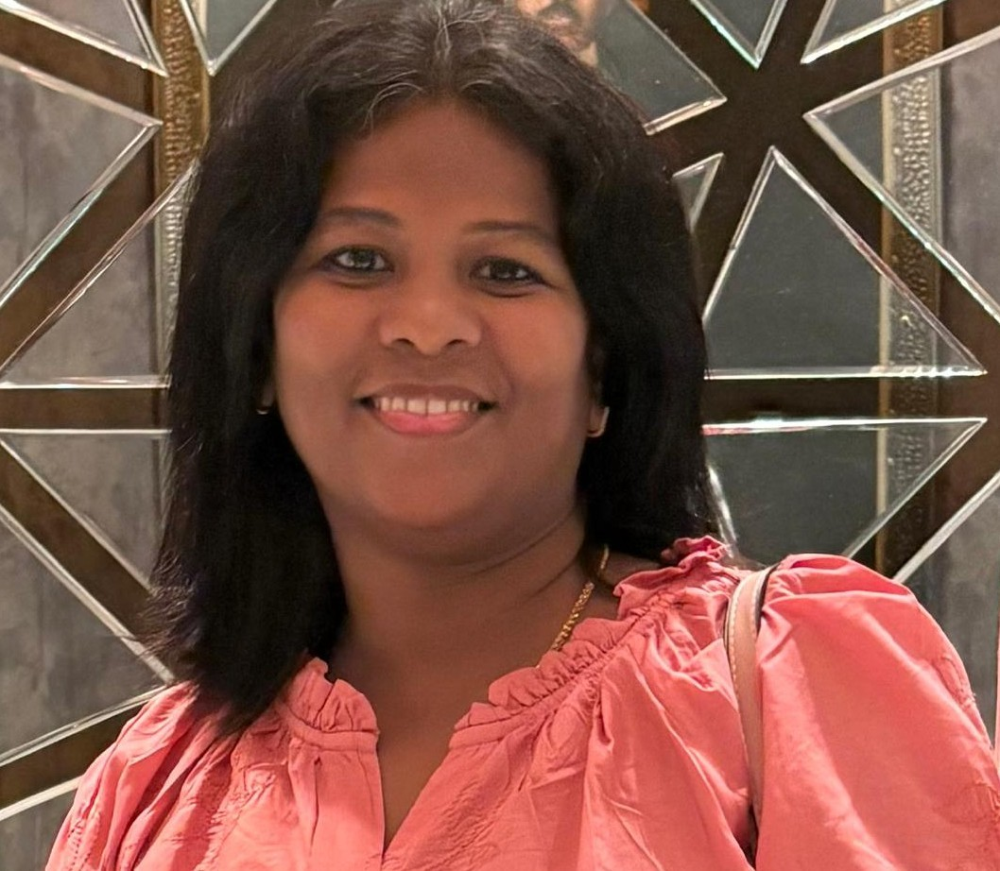

Faculty Associate – Mahindra University
PhD Researcher in Artificial Intelligence
I am a researcher and educator specializing in Artificial Intelligence, Machine Learning and Computational Intelligence.I have 12 years of Teaching Experience and prior industry experience at Cognizant and CSS Corp.I completed my B.E. and M.E. in Computer Science and Engineering from Anna University, Chennai.During My BE did a project in HCL technologies – Duplicate Elimination of Randomized Protocol of Peer To Peer System. I have published two books (Data Mining and Mobile Architecture) and two Indian patents related to Wireless Sensor Networks (WSN) and Artificial Intelligence (AI).My work focuses on evolutionary algorithms, AI-driven music composition, and optimization techniques in machine learning.
Email: nartkannaik@gmail.com